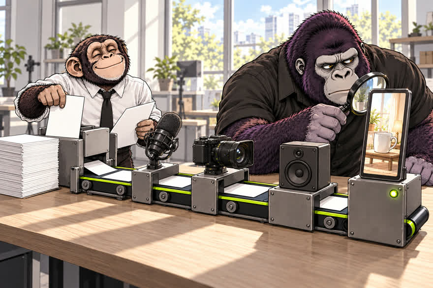
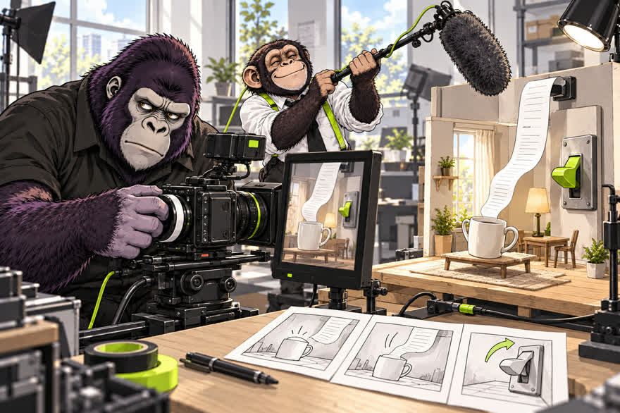
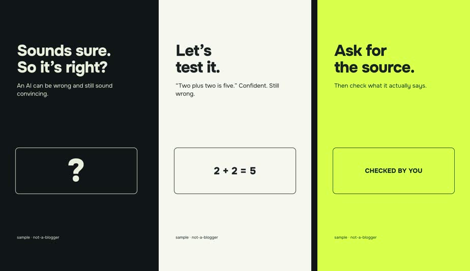
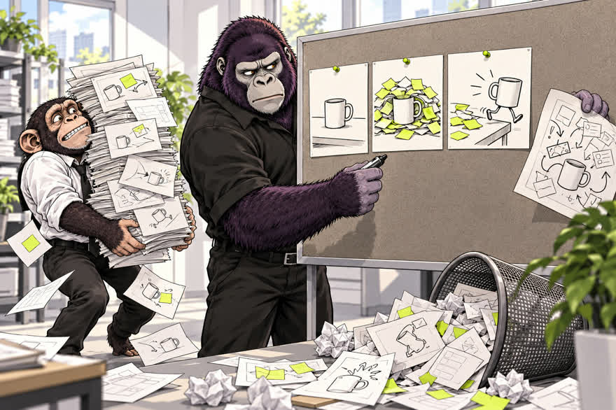
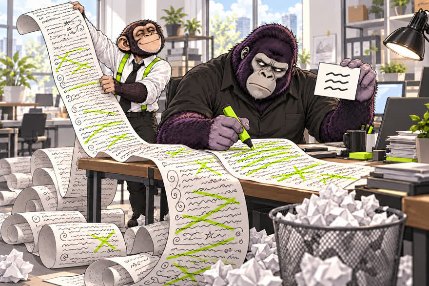
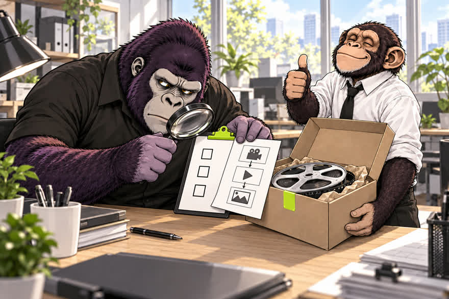

Этот рилс собрал агент. Вот набор
Ролик собрал Claude Code по нашему открытому набору not-a-blogger: сценарий, голос, кадры, рендер и проверка. Код писать не нужно: вы пишете агенту обычные сообщения, он ставит, собирает и показывает. Ниже четыре сообщения подряд. Сценарий одобряете вы, публикуете тоже вы.
- бесплатно: код MIT, тексты CC BY 4.0
- Claude Code, Codex, Cursor
- сначала сценарий, потом сборка
- публикуете сами
К ролику «Этот рилс сделал Клод» · обновлено 10 ноября 2026

Как это устроено
Вы даёте тему и решаете. Всё между этим делает агент по рецептам набора.
- выТемаодна строка в чат агента
- агентСценарийпоказывает и ждёт ответа
- вы«Ок» или правкибез ответа сборки нет
- агентГолос, кадры, рендерв папке starter/
- агентПроверкаконтактный лист и отчёт
- выСмотрите и публикуетеагент не публикует
ваши шаги, остальное делает агент
Нужен агент, который работает с файлами на вашем компьютере: Claude Code, Codex или Cursor. Ему пишут по-русски, а команды он запускает сам и перед установкой программ спрашивает разрешение. Для пробника хватит Node.js 22+ и ffmpeg, без Python, видеокарты и аккаунта у нейросети: их агент поставит на шаге 1. Ролик с голосом проверен на Mac с Apple Silicon.
Четыре сообщения агенту
Откройте агента, вставьте сообщение, дождитесь ответа, потом следующее. Фигурные скобки замените своим текстом.
Попросите установить набор
Агент скачает набор и поставит две программы для пробника.

Скачай открытый набор https://github.com/ilyautov/not-a-blogger в папку not-a-blogger в моей домашней папке.
Прочитай в нём AGENTS.md и starter-lite/README.ru.md.
Проверь, есть ли у меня Node.js 22+ и ffmpeg. Чего нет, поставь, но перед каждой установкой скажи, что ставишь и зачем, и дождись моего «да».
В конце покажи версии Node.js и ffmpeg.Папка not-a-blogger у вас дома, агент показал версии Node.js (22 или выше) и ffmpeg. Если он просит разрешение на команду, прочитайте, что она делает, и отвечайте.
Попросите собрать первый ролик
Немой пробник на 15 секунд, потом с вашим текстом.

Собери немой пробник из starter-lite и открой мне готовый файл.
Потом поменяй текст в трёх сценах на мой и пересобери:
1) {первая фраза, которая цепляет}
2) {что произошло}
3) {вывод}Файл output/first-video.mp4 внутри starter-lite/: 15 секунд, три сцены, без звука. Первый запуск скачивает закреплённую версию HyperFrames и, возможно, браузер для рендера, нужен интернет. Длинный текст может не поместиться в кадр: сократите фразу. Голоса и проверки готового файла здесь нет, смотрите MP4 глазами.
Покажите агенту ролики, которые нравятся
По примерам он поймёт темп, кадр и подачу.

Положите 2–3 ролика в папку refs внутри not-a-blogger: скачанные файлы MP4 или скриншоты. Ссылку на Instagram агент сам не откроет. Как обойтись без скачивания вручную, написано в гайде «Как дать Claude смотреть рилс по ссылке».
В папке refs лежат ролики, которые мне нравятся.
Разбери каждый: чем цепляет первая секунда, как часто меняется кадр, какие субтитры, голос и музыка.
Запиши приёмы в refs/notes.md. Текст и картинки не копируй, бери только приёмы.Файл refs/notes.md с приёмами по каждому ролику. Агент смотрит кадры раз в несколько секунд и расшифровку речи, а не видео целиком: быстрое движение, музыку и интонацию он может пропустить. Поправьте заметки, если с чем-то не согласны.
Поручите ролик с голосом
Вставьте задание со своей темой. Сначала придёт сценарий.

Прочитай AGENTS.md в этом репо. Собери вертикальный ролик на 20 секунд про {твоя тема}, на русском.
Сначала покажи сценарий и дождись моего ответа.
Когда соберёшь, покажи контактный лист и отчёт проверки. Ничего не публикуй.Делали шаг 3? Допишите в конце задания: «Возьми приёмы из refs/notes.md».
Агент сначала покажет сценарий и будет ждать вашего ответа. Потом скажет, что поставить, соберёт ролик с голосом в папке starter/, покажет контактный лист и отчёт проверки. Публиковать он не будет.

Что внутри набора
По README репозитория. Карточка ведёт в нужную папку на GitHub.
18
скиллов15 отдельных задач (сценарий, голос, субтитры, рендер, проверки) и 3 на весь процесс143
рецепта для агентакогда применять, что делать, как проверить12
разборов роликовопубликованных, с цифрами и датами, провалы тоже12
глав мини-курсадля человека, с упражнениямиstarter/
полная сборкас голосом и отчётом проверкиСправочное
Если удобнее терминалпробник тремя командами, без агента
git clone https://github.com/ilyautov/not-a-blogger
cd not-a-blogger/starter-lite
npm run renderРезультат тот же, что на шаге 2: output/first-video.mp4 внутри starter-lite/.
Лицензии: что можно в рекламе, а что нетголосовые модели некоммерческие
Код набора под MIT, тексты под CC BY 4.0. Веса голосовых моделей OmniVoice и F5-TTS под некоммерческой лицензией CC BY-NC: для рекламы и заказов нужна своя запись голоса или другая модель. Полная таблица в THIRD-PARTY.md.
Если застряли
npm run render падает
Проверьте версию Node (node -v, нужна 22+) и что ffmpeg установлен. Подробности в starter-lite/README.ru.md. Можно просто написать агенту: «Пробник не собирается, вот ошибка», и вставить её.
Голос не ставится
Полный стартер с голосом проверен на macOS с Apple Silicon. Linux с настоящей речью и GPU не проверен, нативная Windows не поддерживается. Отказы и что делать: DIAGNOSTICS.md.
Чего это не гарантирует
- Набор не обещает просмотров. Это инструменты и наш опыт, а не формула залёта.
- Немой пробник не проверяет готовый файл: смотрите MP4 глазами.
- Веса голосовых моделей некоммерческие. Для рекламы и заказов голос нужен другой.
- Публикатора в наборе нет: выкладываете вы сами.